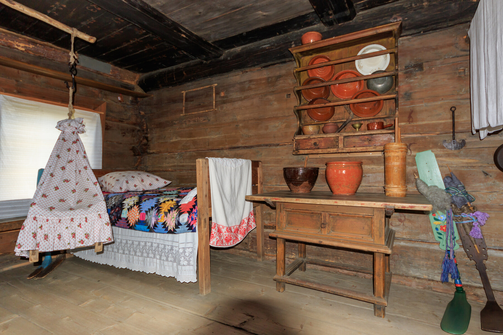

Музей русской этнографии · Русские Заонежья
В одной комнате —
целая жизнь
Здесь спят, растят ребёнка и готовят нить для будущей ткани. Рассмотри комнату — какие вещи ты узнаешь?
Начать с трёх деталей ↓01 / Войди в фотографию
Открыто 0 из 3
Посмотри внимательнее
Три вещи. Три домашних дела.
Выбери название под фотографией. Кадр приблизится, а здесь появится история детали.
02 / Как бы ты справился?
Волокно есть.
Как получить нить?
Представь домашнюю работу: нужно превратить подготовленное волокно в нить. Какую пару инструментов ты выберешь?
Учебная ситуация по описанию прядения музея «Кижи».
Выбери решение — увидишь, какой шаг оно позволяет сделать.
03 / Узнай своё
А у вас дома
такое было?
Отметь знакомое. Здесь нет правильных ответов.
Связь с прошлым иногда начинается с одной знакомой вещи.
Запись остаётся на этом устройстве. Музей её не получает.
У комнаты есть адрес
Один дом.
Не вся Россия сразу.
Дом Ошевневых построен в 1876 году. Теперь он входит в экспозицию «Русские Заонежья» музея «Кижи». Его интерьер показывает быт зажиточных крестьян этой местности на рубеже XIX–XX веков.
Перед нами музейная экспозиция. Нельзя считать, что все вещи на снимке принадлежали одной семье или сохранились на своих первоначальных местах. Зато можно внимательно разглядеть, как устроены предметы, а их использование проверить по музейным описаниям.
Материалы, источники и права
Музей «Кижи»: дом Ошевнева — дата, регион и характер интерьера.
Музей «Кижи»: прядение и каталог прялок — устройство инструмента и получение нити.
Фотография: А.Савин, Википедия, 04.06.2017. Free Art License 1.3. Веб-копия уменьшена и сжата; увеличение показывает фрагменты того же кадра. Производная фотография распространяется под той же лицензией. Проверено 08.09.2026.
{kind=link}
Описание покрывала и видимого крепления колыбели — наблюдение по фотографии. Учебная ситуация и вопросы — авторская разработка проекта.